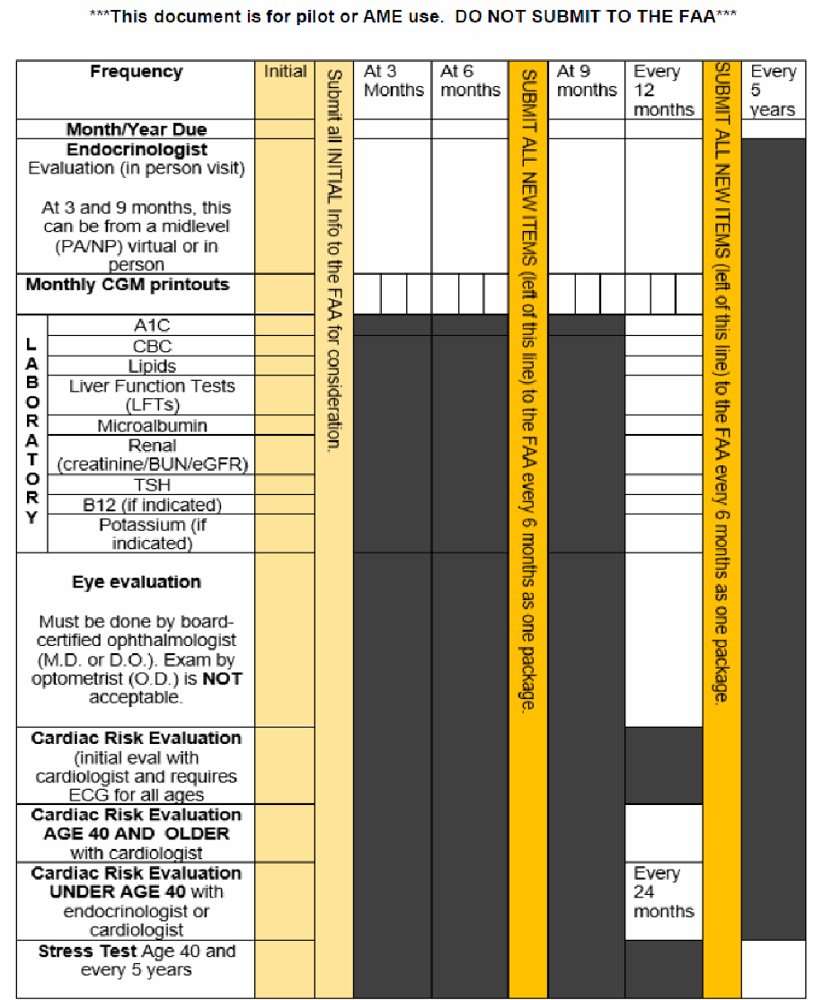
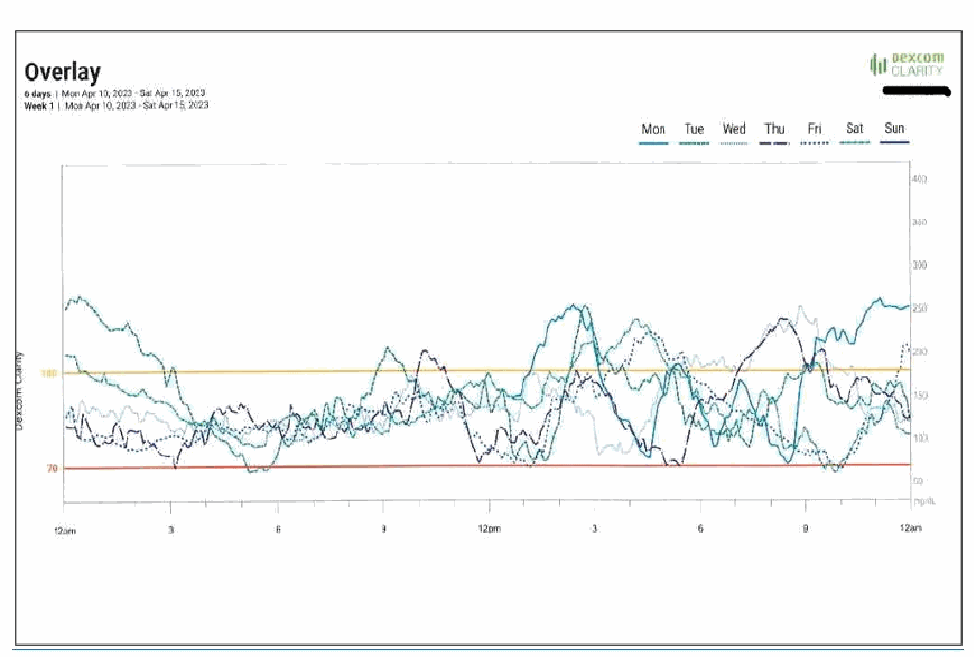

Protocol for Diabetes Mellitus Type I or Type II Insulin Treated - CGM Option
(Updated 08/30/2023)
Consideration will be given to those individuals who have been clinically stable on their current treatment regimen for a period of 6-months or more. The FAA has an established policy that permits the special issuance medical certification to some insulin treated applicants. Individuals certificated under this policy will be required to provide medical documentation regarding their history of treatment, accidents, and current medical status. If certificated, they will be required to adhere to monitoring requirements. There are no restrictions regarding flight outside of the United States air space. Airmen with a current 3rd class certificate will have the limitation removed with their next certificate. If they need the limitation removed sooner, they should contact AMCD for an updated certificate without the limitation.
CONTINUOUS GLUCOSE MONITORING (CGM PROTOCOL) - ALL CLASSES:
For consideration for first- or second-class airman certification, the airman must submit Continuous Glucose Monitoring (CGM) data and ALL the certification requirements as outlined below:
For details of what specific information must be included for each requirement/report, see the links below (or the following pages in this document) for:
NON-CGM PROTOCOL - THIRD CLASS OPTION:
Third class airmen may elect to use either the CGM protocol or the non-CGM protocol. See the links below (or the following pages in this document) for details of what specific information must be included for each requirement/report for third-class certification.
- A. INITIAL CERTIFICATION
- B. MONITORING AND ACTIONS REQUIRED DURING FLIGHT OPERATIONS
- C. RE-CERTIFICATION
- D. DIABETES ON INSULIN RE-CERTIFICATION STATUS REPORT
DIABETES MELLITUS TYPE I OR TYPE II INSULIN TREATED CGM OPTION
A. PILOT INFORMATION - INITIAL CERTIFICATION
(Updated 08/30/2023)
If you are a PILOT:
- 1. See your treating physician and get healthy.
- 2. Do not fly, in accordance with 14 CFR 61.53, until you have an Authorization from the FAA.
Find an Aviation Medical Examiner ( AME ) to work with you through the FAA process:
- � Establish care and obtain an evaluation with a board-certified endocrinologist.
(See Item #1 – ITDM Initial Certificate Consideration Requirements )
- � Select, in conjunction with your board-certified endocrinologist, an appropriate Continuous Glucose Monitor (CGM) device that meets all FAA monitoring criteria.
(See “Item # 3 - Continuous Glucose Monitor Data” of the ITDM Initial Certificate Consideration Requirements).
� Collect a minimum of 6 months of CGM data.
- � Separate the data by month (e.g., Jan. 1-31, Feb. 1-28, March 1-31, etc.).
- � Review the CGM Data - Report Examples. Verify you provide the correct report views based on the type of CGM device used.
- � Verify your CGM report identifies the percentage of time spent with glucose:
- � Less than 54 mg/dL;
- � Less than 70 mg/dL;
- � Between 70 and 180 mg/dL;
- � Above 180 mg/dL; and
- � Above 250 mg/dL
- � Obtain initial lab battery and submit copies of A1C from at least past 12 months.
- � Obtain an eye evaluation from a board-certified ophthalmologist (M.D. or D.O.). Exam by an optometrist (OD) is NOT acceptable.
� Obtain a cardiac evaluation from a board-certified cardiologist. Must be a physician, (M.D. or D.O), not a mid-level practitioner.
- � Obtain an ECG.
- � Undergo a Stress Test Bruce Protocol (if age 40 or older).
3. When you have accomplished ALL of the above:
- � Take to your AME all of the above items and any other information on any other condition(s) that may require a Special Issuance
- � See your AME and complete a new 8500-8 exam
- � The AME is not authorized to issue an initial medical certificate and must transmit the application and physical examination as DEFERRED
- � The AME may assist with uploading the documents (See uploading guidance .)
IMPORTANT NOTE:
While your exam is under review: Continue to submit your endocrinologist report and monthly CGM printouts EVERY 3 MONTHS. This will ensure the FAA has the most current information. If current information is not submitted, the FAA will then have to requested it, which will delay the certification review.
DIABETES MELLITUS TYPE I OR TYPE II INSULIN TREATED - CGM OPTION
B. INITIAL CERTIFICATE CONSIDERATION REQUIREMENTS
(Updated 12/03/2025)
For consideration for first- or second-class medical certification, the applicant must submit Continuous Glucose Monitoring (CGM) data. Requirements are below. For information on the specific information needed for each requirement/report (items #1-5), see the CGM – Certification Aid.
The individual must demonstrate stability and adequate control, verified by CGM data, for a minimum of 6 months. If a new diagnosis of Insulin-treated Diabetes Mellitus (ITDM) or any concerns regarding adequacy of control may require a longer stability period.
Additional information may be required on a case-by-case basis. For information on how to send documents to the FAA, see How to Submit Documents for Initial or Recertification/Renewal .
Submit the following performed within the past 90 days:
ITEM # 1 Initial Comprehensive clinical consultation from your treating board-certified endocrinologist (M.D. or D.O.), not a mid-level practitioner. This may be labeled progress note, consultation note, or history and physical.
Note: for initial evaluations, the former “Diabetes on Insulin Re-Certification Status Report” (now called “Diabetes on Insulin Re-Certification Status Report NON CGM – Third Class Option”) will NOT be accepted. The Initial Comprehensive report contains significant additional information.
ITEM # 2 Lab - Initial/Annual comprehensive panel. (See Certification Aid for required list.)
ITEM # 3 Monthly CGM data with a device that meets FAA requirements for the preceding 6 months (up to 12 months when available).
CGM data should demonstrate consistent, effective ongoing use; time-in-range (70– 180 mg/dL); and for excursions below 54, below 70 and above 180, and above 250 mg/dL. (See chart on next page.)
When providing CGM Data reports, for each month of data, include the following reports based on your device. Submit the original digital reports in color (when possible):
DEXCOM
- � Overview Report
- � Ambulatory Glucose Profile (AGP) Report
- � Alert Settings
- � Weekly Overlays/Graphs (for each week of the month)
MEDTRONIC
- � Assessment & Progress Report
- � Weekly Overlays/Graphs (for each week of the month)
INITIAL CERTIFICATE CONSIDERATION REQUIREMENTS (Page 2 of 2)
(Updated 12/03/2025)
(Continued)
ITEM # 3 OTHER DEVICES
- � The data report should include estimated A1c (and/or GMI - glucose management indicator), average glucose, coefficient of variation, standard deviation, time in range, sensor usage, and weekly overlays/graphs.
- � A list of acceptable CGM devices can be found the CGM Option – Certification Aid.
SETTINGS: Alarm Settings and Repeat Alarm Settings should be turned ON
CGM GOALS: See table below for parameters and target range.
While it is important that the CGM data meets the FAA CGM goals noted below, it is also essential that the weekly graphs/overlays demonstrate consistent glycemic control with minimal excursions below 70mg/dl and/or above 250mg/dl.
if the CGM data meets the CGM goals but glycemic control is inconsistent on the weekly graphs/overlays, this will be considered unacceptable and may jeopardize medical certification eligibility.
Parameter | Target Range for Certification Consideration |
|---|---|
Auto Mode | Greater than 90% |
Coefficient of Variance | Less than or equal to 36% (< 33% preferred) |
Glucose Management Indicator (GMI) | Less than 7% |
Glucose readings - less than 54 mg/dl | less than 1% |
Glucose readings - less than 70 mg/dl | less than 4% |
Glucose readings - greater than 250 mg/dl | less than 5% |
Overall glucose readings - 70-250 mg/dl | 90% or greater |
Sensor wear | 90% of the time or greater |
Time in Range (TIR) of 70*-180 mg/dl | 70% or greater |
*Note: TIR 70 per ADA guidance.
ITEM # 4 Eye evaluation from a board-certified ophthalmologist (M.D. or D.O).
An exam by an optometrist (O.D.) is NOT acceptable; AND
ITEM # 5 Cardiac Risk Evaluation from a board-certified cardiologist (M.D. or D.O.), not a mid-level practitioner.
- � Evaluation must include lab and ECG;
- � Age 40 and above must also include an initial exercise stress test (EST)
IMPORTANT NOTE:
While your exam is under review: Continue to submit your endocrinologist report and monthly CGM printouts EVERY 3 MONTHS. This will ensure the FAA has the most current information. If current information is not submitted, the FAA will then have to request it, which will delay the certification review.
DIABETES MELLITUS TYPE I OR TYPE II - INSULIN TREATED CGM OPTION
C. CERTIFICATION AID
(Updated 08/30/2023)
The following are the specifics of the ITEM numbers listed in the Initial and Renewal requirements:
ITEM #1: INITIAL COMPREHENSIVE REPORT (Updated 03/30/2022)
INITIAL COMPREHENSIVE in-person evaluation performed within the past 90 days from the treating board-certified endocrinologist. The individual must submit a copy of the actual comprehensive current, detailed Clinical Progress Note. (We will NOT accept the patient encounter summary or a letter from the endocrinologist.) It must detail and comment on ALL of the following*1:
A. DIABETES HISTORY:
1. Characteristics at onset (age, symptoms, etc.):
- a) Review previous treatment and response
- b) Frequency/cause/severity of past hospitalizations
c) Complications and common comorbidities:
- Any end organ damage (macrovascular or microvascular);
- Presence of hemoglobinopathies or anemias;
- High blood pressure or abnormal lipids and treatment; and
- Visits to specialist (what type and why)
d) Lifestyle and behavior patterns:
- Eating patterns and weight history;
- Sleep behavior and physical activity;
- Familiarity with carbohydrate counting, if applicable;
- Tobacco, alcohol, and substance use; and
- Any motor vehicle accidents or incidents pertinent to their history of diabetes
2. Medication and Reporting:
- a) Medication compliance;
- b) Medication intolerance or side effects;
- c) Complementary or alternative medicine use;
- d) Glucose monitoring (meter/CGM) results and data use; and
- e) Review insulin pump settings
3. Screening for Psychosocial conditions:
- a) Screen for depression, anxiety, disordered eating (ex: Patient Health Questionnaire 9 or 2 [PHQ-9 or PHQ-2] or similar);
- b) Cognitive impairment assessment (and formal testing, if clinically indicated); and
c) Diabetes self-management education and support:
- History of dietician/diabetes educator visits; and
- Screen for barriers to diabetes self-management
4. Glucose control:
a) HYPOglycemia:
- Any symptomatic episodes in the past 12 months requiring treatment or assistance by another individual, with comment on timing, awareness, frequency, causes, and treatment.
- Sustained episodes, e.g., CGM/FSBG values below 70 mg/dL for over 30 minutes or below 54 mg/dL for over 15 minutes, with comment on symptoms and treatment.
b) HYPERglycemia:
- Any symptomatic episodes in the past 12 months with comment on timing, awareness, frequency, causes, and treatment.
CERTIFICATION AID (Page 2 of 5)
(Updated 08/30/2023)
- Sustained episodes (e.g., CGM/FSBG values above 250 mg/dL for over 60 minutes or above 300 mg/dL for over 30 minutes) with comment on symptoms and treatment.
B. PHYSICAL EXAM (Must narrate what is examined and any findings):
- 1. Height, Weight, Body Mass Index (BMI);
- 2. Pulse and blood pressure including orthostatic blood pressure, when indicated;
- 3. Thyroid palpation and skin exam (acanthosis nigricans, insulin injection or insertion sites, lipodystrophy); and
4. Comprehensive foot exam:
- a) Visual inspection; screen for PAD (check pedal pulses; refer for ABI if diminished); and
- b) Determination of temperature, vibration or pinprick sensation, and 10-g monofilament exam
C. ASSESSMENT AND PLAN:
- 1. Current status of diabetes including an assessment of compliance, glucose control, and stability as well as their ability to monitor and respond accordingly to HYPO and HYPER glycemic events and administer insulin doses;
- 2. Prognosis for progression over the next 12 months; and
- 3. Recommendations for treatment changes
D. DATE OF NEXT CLINICAL FOLLOW-UP (Required every 3 months for FAA.)
*1 Modified from American Diabetes Association (ADA) Standards of Medical Care 2020
ITEM #2: LAB
LAB - Initial/Annual comprehensive panel performed within the past 90 days:
A. A1C Within last 90 days AND all prior values from the preceding 12 months
B. CBC Complete Blood Count
C. Lipids Total, LDL [low density lipoprotein], HDL [high density lipoprotein], cholesterol, and triglycerides
D. LFT’s Liver function tests
E. Microalbumin or spot urinary albumin-to-creatinine ratio
F. Renal function Serum creatinine, BUN (blood urea nitrogen), eGFR (estimated glomerular filtration
G. TSH Thyroid-stimulating hormone
H. Vitamin B12 When clinically indicated
I. Potassium Serum level when clinically indicated or when taking ACE-I (angiotensin
converting enzyme inhibitors), ARBs (angiotensin II receptor blockers), or diuretics
ITEM #3: CONTINUOUS GLUCOSE MONITOR (CGM) DATA (Updated 08/30/2023)
When submitting CGM data:
- � DO Submit the required weekly or monthly graphs . (See examples on the following pages)
- � DO NOT submit daily or hourly statistics from insulin pumps.
- � When providing CGM Data reports, for each month of data, include the following reports based on your device. Submit the original digital reports IN COLOR (when possible):
CERTIFICATION AID (Page 3 of 5)
(Updated 08/30/2023)
DEXCOM
- � Overview Report
- � Ambulatory Glucose Profile (AGP) Report
- � Alert Settings
- � Weekly Overlays/Graphs (for each week of the month)
MEDTRONIC
- � Assessment & Progress Report
- � Weekly Overlays/Graphs (for each week of the month)
OTHER DEVICES
- � The data report should include estimated A1c (and/or glucose management indicator [GMI]), average glucose, coefficient of variation, standard deviation, time in range, sensor usage, and weekly overlays/graphs.
- A. CONTINUOUS GLUCOSE MONITOR (CGM) DATA on a device that meets the FAA’s minimum CGM device feature requirements.
- 1. Readings from (at a minimum) the preceding 6 months for initial certification and thereafter 3 months.
2. Analyze to identify percentage time in the following ranges:
- a) Less than 54 mg/dL
- b) Less than 70mg/dL
- c) Between 70 and 180 mg/dL
- d) Above 180 mg/dL
- e) Above 250 mg/dL
- B. CGM DEVICE FEATURES: The FAA does not endorse any particular manufacturer, however, the CGM device must have the following features:
- 1. Must be FDA-approved and appropriate for age;
- 2. Must be a real-time CGM (automatically transmits glucose data to the user) without need to manually scan the sensor (e.g., intermittently scanned CGM);
- 3. Have “predictive arrow trends” that provide warnings of potentially dangerous glucose levels (high or low) before they occur;
- 4. Able to customize low and high glucose levels;
- 5. Have a high-accuracy rating with an overall Mean Absolute Relative Difference (MARD) of 10% or less. (e.g., If the MARD is 10% and the glucose reading is 70mg/dL, the actual blood glucose could be as low as 63 mg/dL or as high as 77mg/dL);
- 6. Printout reports must include monthly summary showing: Time-In-Range (TIR) Values for 70- 180 mg/dL; Average Glucose Levels; Standard Deviation (SD); and (when provided by the reporting software) Coefficient of Variability [CoV] values. Reports must include weekly glucose value data graphics. All data must be legible. Failure to provide these values could result in a delay in processing your application;
- 7. Calibrated to at least at the minimum frequency required by the manufacturer or endocrinologist; and
8. Must be individual’s own, unblinded CGM that cannot be shared with anyone else. The individual cannot use anyone else’s CGM (e.g., blinded CGM device, which is professional use only).
- a) Time-In-Range (TIR) Values for 70-180 mg/dL;
- b) Average Glucose Levels;
- c) Standard Deviation (SD); and (when provided by the reporting software)
CERTIFICATION AID (Page 4 of 5)
(Updated 08/30/2023)
- d) Coefficient of Variability [CoV] values;
- e) Alarm Settings, indicating both high and low alarms are active;
NOTE: CGM Alarm Settings and Repeat Alarm Settings should be turned ON.
- f) Device manufacturer and current model; and
- g) Reports must include weekly glucose value data graphics. All data must be legible. Failure to provide these values could result in a delay in processing of the application.
CGM devices that currently meet the required features (as of 08/30/2023) include:
Dexcom G7
Dexcom G6
Dexcom G5
Dexcom G4 PLATINUM
Freestyle Libre 3
Medtronic MiniMed 670G system CGM with insulin pump
Medtronic MiniMed 630G system CGM with insulin pump
Medtronic MiniMed 780G system CGM with insulin pump
Medtronic Guardian Connect CGM system
Senseonics’ Eversense CGM (90-day monitor)
Senseonics’ Eversense E3 CGM (180-day monitor)
This list may not be all-inclusive. Refer to the CGM Device Features in Item B.
- C. INSULIN PUMP REQUIREMENTS:
- 1. If using an insulin pump, it must have the ability to suspend insulin for a predictive low glucose or predicted pressure changes;
- 2. Insulin used in the pumps must be FDA approved for that use; and
- 3. Insulin pumps must also be FDA approved as compatible with the CGM device. (Not all CGM devices are compatible with all insulin pumps.)
ITEM #4: EYE EVALUATION
EYE EVALUATION performed within the past 90 days from a board-certified ophthalmologist (M.D. or D.O.). Exam by optometrist (O.D.) is NOT acceptable. Evaluation must include:
A. VISUAL ACUITY (with and without correction) each eye separately and together for:
- 1. Near;
- 2. Intermediate; and
- 3. Distance vision
B. EVALUATION FOR OTHER RETINAL OR CLINICALLY SIGNIFICANT EYE DISEASE:
- 1. Cataracts, any evidence;
- 2. Color vision deficiency: test used; method used;
- 3. Contrast sensitivity: test used; method used;
- 4. Depth perception abnormality;
- 5. Intra Ocular P Pressure (IOP) reading (and treatment if required): test used, method used; and
- 6. Visual field defects: type of test, method used (confrontation fields are acceptable).
CERTIFICATION AID (Page 5 of 5)
(Updated 08/30/2023)
- C. DILATED FUNDUS EXAM with documentation of absence of retinopathy or degree of retinopathy, if present, and any treatment indicated or recommended.
- D. DIAGNOSIS, PROGNOSIS, AND RECOMMENDATIONS FOR TREATMENT OR FOLLOW-UP.
ITEM #5: CARDIAC RISK EVALUATION (Updated 08/30/2023)
CARDIAC RISK EVALUATION performed within the past 90 days from a board-certified cardiologist (M.D. or D.O.), not a mid-level practitioner. The document submitted MUST be from the actual in-person office evaluation and resultant current, detailed Clinical Progress Note:
- A. INITIAL CARDIAC RISK EVALUATION:
- 1. Evaluation from a board-certified cardiologist assessing cardiac risk factors;
- 2. Baseline ECG (regardless of age);
- 3. The evaluation must be COMPREHENSIVE, in-person, and performed within the past 90 days from the treating board-certified cardiologist. The individual must submit a copy of the actual comprehensive current detailed Clinical Progress Note. (We will NOT accept the patient encounter summary [after visit summary] or a letter.)
B. STRESS TEST (Maximal exercise treadmill stress testing (Bruce):
- 1. Beginning at age 40,
- 2. every 5 years thereafter, and
- 3. at any age when clinically indicated:
See Graded Exercise Stress Test Protocol.
C. IF THERE ARE ANY ABNORMALITIES on the ECG, stress test, or identification of any cardiac conditions, the cardiologist must provide a report that details:
- 1. Any confirmed or suspected diagnosis
- 2. Clinical status including any symptoms
- 3. Control of cardiac risk factors (HTN, smoking, hyperlipidemia, exercise, weight)
- 4. Treatment or monitoring required or recommended and any side effects
- 5. Were other investigations conducted or recommended (attach reports)
- 6. Risk of any acutely disabling cardiovascular event (annualized percentage risk)
For information on how to send documents to the FAA, see How to Submit Documents for Initial or Recertification/Renewal.
DIABETES MELLITUS TYPE I OR TYPE II - INSULIN TREATED CGM OPTION
D. INFORMATION SUBMISSION REQUIREMENTS
(Updated 08/30/2023)
AIRMAN’S NAME___________________________ PI# or MID#____________________________

DIABETES MELLITUS TYPE I OR TYPE II - INSULIN TREATED CGM OPTION
E. CGM RENEWAL CERTIFICATE REQUIREMENTS
(Updated 08/30/2023)
Once the individual has obtained an Authorization for Special Issuance, they should submit the requirements specified in their Authorization Letter. The item numbers below correspond to the numbers on Initial Certificate Consideration Requirements sheet .
Note: The AME may NOT re-issue a medical certificate UNLESS the Authorization letter specifically indicates the AME may re-issue a time-limited certificate.
In general, the renewal information required is as follows:
EVERY 6 MONTHS
ITEM #1 Every 3 months, a comprehensive endocrinology clinical examination.
- � Every 6-month visit must be in-person and performed by your endocrinologist.
- � The 3-month interval visits may be in person or virtually at the discretion of the endocrinologist. These interval visits may be from your endocrinologist or a mid-level practitioner [physician assistant (PA) or nurse practitioner (NP)] associated with your endocrinologist:
- � It should include all parts of the clinical examination: summary of the history of the condition; current medications (dosages and side effects, if any); clinical exam findings; comprehensive foot exam (e.g., visual inspection, sensation, 10-g monofilament exam, etc.); results of any testing performed; diagnosis; assessment; plan (prognosis); and follow-up.
- � After the examination, obtain the current, detailed Clinical Progress Note from your provider;
NOTE: A letter from your endocrinologist is NOT sufficient and cannot substitute for a current detailed Clinical Progress Note.
- � If additional visits occur, submit those actual clinic record(s) to the FAA also.
ITEM #3 Monthly CGM data reports for the previous 6 months:
- � Collect data for each month. Separate the data by month (e.g., Jan. 1- 31, Feb. 1-28, March 1-31, etc.);
- � Continue ongoing use with a CGM device that meets FAA requirements.
EVERY 12 MONTHS
- � All items listed in the “EVERY 6 MONTHS” section above, PLUS:
- � ITEM #2 - Lab - Annual comprehensive panel;
- � ITEM #4 - Eye evaluation from a board-certified ophthalmologist (M.D. or D.O). Exam by an optometrist is NOT acceptable; AND
- � ITEM #5 - Cardiac Risk Evaluation for Age 40 and above
from a board-certified cardiologist including lab;
- � ECG, stress test or other cardiac testing, if clinically indicated;
(Note: stress test required every five (5) years, sooner if concerns or clinically indicated.
ADDITIONAL INFORMATION MAY BE REQUIRED ON A CASE-BY-CASE BASIS.
CGM RENEWAL CERTIFICATE REQUIREMENTS (Page 2 of 2)
(Updated 08/30/2023)
EVERY 24 MONTHS: (updated 8/30//2023)
ITEM #5 Cardiac Risk Evaluation for UNDER Age 40
- From either your board-certified-endocrinologist OR a board-certified cardiologist, including lab;
- o ECG, stress test or other cardiac testing, if clinically indicated;
(Note: stress test required every five [5] years, sooner if concerns or clinically indicated.)
Submit all above items to your AME for upload into your FAA file. See How to Submit Documents for Initial or Recertification/Renewal.
DIABETES MELLITUS TYPE I OR TYPE II - INSULIN TREATED CGM OPTION
F. HOW TO SUBMIT DOCUMENTS FOR INITIAL OR RECERTIFICATION/RENEWAL
(Updated 08/30/2023)
Coordinate with your AME to make sure that A COMPLETE package is sent to the FAA WITHIN 14 DAYS. Partial or incomplete packages will NOT be reviewed and will cause a DELAY in certification. Your AME may submit the documents to the FAA using the AMCS document upload feature.
UPLOAD EACH DOCUMENT SEPARATELY:
- � Endocrinologist current, detailed Clinical Progress Notes (each visit separately).
- � Cardiologist current, detailed Clinical Progress Note (each visit separately).
- � Ophthalmologist current, detailed Clinical Progress Note (each visit separately).
- � Lab Results (separated by date of collection).
- � CGM Data (separated by month). We strongly recommend uploading the original color digital report in PDF format.
- � Other pertinent documentation deemed necessary by you or your AME.
The fastest and most efficient way to submit reports to the FAA is through your AME as a direct upload. See instructions on How to Upload Documents .
As an alternative to your AME uploading digital reports, you may mail the diabetes information in paper format (color printouts preferred) using one of the following addresses:
Regular mail (US postal service)
Federal Aviation Administration
Civil Aerospace Medical Institute, Building 13
Aerospace Medical Certification Division, AAM-313
PO Box 25082 Oklahoma City, OK 73125-9914
OR
Special mail (FedEx, UPS, etc.)
Federal Aviation Administration
Medical Appeals Section, AAM-313
Aerospace Medical Certification Division 6700 S. MacArthur Boulevard, Building 13, Room 308
Oklahoma City, OK 73169
If your documents have been uploaded by your AME using the AMCS document upload feature, DO NOT also mail the documents. Duplication of documents will
delay the review of your medical certification file.
DIABETES MELLITUS TYPE I OR TYPE II INSULIN TREATED - CGM OPTION
G. CGM DATA REPORT EXAMPLES
(Updated 08/30/2023)
The following pages show CGM Data report examples for various devices.
Please submit any CGM graphs IN COLOR.
EXAMPLE – Weekly OVERLAY

CGM DATA REPORT EXAMPLES (Page 2 of 7)
(Updated 08/30/2023)
DEXCOM
EXAMPLE – AGP
Note: Submit graphs in color.
CGM DATA REPORT EXAMPLES (Page 3 of 7)
(Updated 08/30/2023)
DEXCOM G6
EXAMPLE – ALERT SETTINGS
(Alarm settings and repeat alarms must be turned ON.)
Note: Submit graphs in color.
CGM DATA REPORT EXAMPLES (Page 4 of 7)
(Updated 08/30/2023)
DEXCOM G6
EXAMPLE – OVERVIEW
Note: Submit graphs in color.
CGM DATA REPORT EXAMPLES (Page 5 of 7)
(Updated 08/30/2023)
MEDTRONIC 670G
EXAMPLE - ASSESSMENT AND PROGRESS
Note: Submit graphs in color.
CGM DATA REPORT EXAMPLES (Page 6 of 7)
(Updated 08/30/2023)
MEDTRONIC 670G
EXAMPLE - WEEKLY REVIEW REPORT
Note: Submit graphs in color.
CGM DATA REPORT EXAMPLES (Page 7 of 7)
(Updated 08/30/2023)
EVERSENSE REPORT
EXAMPLE
Note: Submit graphs in color.
DIABETES MELLITUS TYPE I OR TYPE II INSULIN TREATED - CGM OPTION PROTOCOL
H. FREQUENTLY ASKED QUESTIONS (FAQs) (Page 1 of 4)
(Updated 08/30/2023)
POLICY FAQs
- 1. What did it take to develop an insulin-use policy for Class I and II medical certificate for the FAA?
Advances in diabetes management utilizing CGM technology provides pilots and the FAA better information about blood glucose levels and advanced warning of potentially dangerous glucose levels before they occur. CGM technology also allows the FAA to evaluate consistency of blood glucose control both in flight and on the ground.
- 2. Why did the FAA take so long to develop an insulin-use policy for Class I/II airmen especially when other countries have allowed it for years?
Various flight safety considerations for this serious health condition could not be safely mitigated for commercial operations until recently. Advances in technology and diabetes management now provide the FAA better parameters to consider Class I and II medical certification for some insulin-dependent airmen.
At the time of initial publication, only Canada and the United Kingdom allow the use of insulin in their pilots with an equivalent Class I or II medical. Unlike the FAA, those aviation authorities can impose specific operational limitations on the medical certificate (e.g., “valid only for two pilot operations” or requiring the other pilot to be both aware of the diabetic condition and able to provide emergency treatment.)
- 3. Why is the FAA so restrictive and why is there so much testing?
The FAA policy follows current medical standards of care for diabetes to ensure pilots are safe to fly in the complex aviation environment and reduce the risks of end-organ damage. If the latter is present, the potential risk of cognitive impairment is increased, which could be magnified in a hypoxic or high-stress environment, affecting safety.
- 4. My doctor says my diabetes is well controlled and that I have no limitations. Why doesn’t FAA accept that?
While your physicians understand how to keep your blood sugar stable while on the ground, they may not be familiar with the additional challenges of the demanding aviation environment and may not consider them when determining clinical limitations. FAA guidance addresses these aviation-specific concerns.
- 5. Are there additional risks when flying with diabetes?
Yes. Hypoglycemia can lead to cognitive impairment, loss of consciousness, and seizure. Hyperglycemia can potentially cause sudden incapacitation, but it can also cause damage to eyes, heart, kidneys, and nervous system.
FREQUENTLY ASKED QUESTIONS (FAQs) (Page 2 of 4)
(Updated 08/30/2023)
BLOOD SUGAR FAQs
- 6. Why is the blood sugar range so narrow?
The recommended blood glucose range is not intended to be “narrow,” but reflects generally accepted treatment guidelines and the needs of safety. Safety concerns arise when blood sugar falls outside of the 70mg/dl - 250 mg/dL range.
- 7. Why do I need to use a CGM device even when I’m not flying? I am well controlled with finger sticks and injections. Why do I need to follow these new rules?
CGM technology allows the FAA to ensure ongoing safety through consistent blood glucose control both in flight and on the ground regardless of the pilot’s flight schedule.
- 8. I am currently on a Special Issuance (SI) for another condition. How will ITDM affect that?
Your existing SI will be invalid due to the additional diagnosis. You will need a new authorization letter.
- 9. What do I do if I develop symptoms or become incapacitated/impaired due to my blood glucose levels while I am on a trip?
- You must disqualify yourself from flight activities as required by both the SI and 14 CFR 61.53;
- Contact your treating endocrinologist to determine if there is a need to change your insulin treatment; and
• Contact your AME with details surrounding the event.
- Your AME should contact the FAA to discuss your case.
CONTINUOUS GLUCOSE MONITOR (CGM) AND INSULIN PUMP FAQs
- 10. Which CGMs does the FAA allow?
The FAA lists the required functions of CGMs in the Guide for Aviation Medical Examiners (AME Guide). While we do not endorse specific brands, we have added a list of devices we know meet these requirements. See “Item # 4 - Continuous Glucose Monitor Data” of the ITDM Initial Certificate Consideration Requirements .
- 11. Why is a CGM required instead of finger stick blood sugar?
The CGM is more accurate, measuring within 10% of the actual blood sugar. It is also independent of the pilot’s action. Turbulence can make it impossible for pilots to perform finger sticks, even with an autopilot and/or second pilot. The CGMs can enable notifications and alerts for specific blood glucose values and show predictive trends, both of which are required. The CGM can also communicate with an insulin pump.
FREQUENTLY ASKED QUESTIONS (FAQs) (Page 3 of 4)
(Updated 08/30/2023)
- 12. How do I know if my CGM and/or insulin pump is legal for flight as an “authorized personal electronic device?”
Most current medical devices should be approved; however, the pilot needs to verify this with the aircraft operator for the aircraft that they fly. It is not feasible for the FAA to maintain a list of approved devices due to the rapidly changing technology and to the large number of airframe and avionics combinations seen in the Part 91, 91k, 121, and 135 fleets.
See AC 20-164A for guidance.
- 13. I know I have to submit CGM data to the FAA. How do I get this information?
Most devices have the ability to print out customized data reports to your computer. Check your device’s user guide for instructions as well as computer and software requirements as these may differ between manufacturers. (Note: Some devices will not allow the export of data onto your phone or tablet.)
- 14. What do I do if my CGM device fails?
You should have all the following available during flight:
- Glucometer (glucose meter) and test strips.
- Backup sensor for the CGM device.
- Backup insulin pen available if using an insulin pump.
If the CGM stops working, go to a back-up plan for the remainder of the flight and measure your finger stick blood sugar every 30 minutes. If you are unable to correct your blood sugar, treat this as any in flight emergency and land as soon as practicable.
- 15. Do I have to get an insulin pump?
No. However, if you choose to get an insulin pump, both the pump and CGM need to be FDA approved, both separately and in combination. Self-built systems are NOT acceptable for flying.
- 16. Are there any concerns with the insulin pumps?
Yes, the pump could potentially fail or malfunction delivering too little or too much insulin.
- In the event of failure or malfunction, a backup insulin delivery must be available.
- In the event of sudden cabin depressurization, consider turning off or disconnecting the pump.
- If necessary, clear any bubbles in tubing seen with changes in cabin pressure.
- 17. Are there any features that make some insulin pumps better for flying?
The ability to suspend insulin delivery for a low reading is a good safety feature. In addition, a pump in which the insulin reservoir is not in direct line for delivery is preferred.
FREQUENTLY ASKED QUESTIONS (FAQs) (Page 4 of 4)
(Updated 08/30/2023)
- 18. I do not use an insulin pump. Do I need to make any changes from my normal routine on the days that I fly?
The goal is to avoid hypoglycemia while flying. Talk with your board-certified endocrinologist about whether or not adjustments should be made on days when you are flying.
- 19. What do I do if my device breaks while traveling or I run out of supplies?
- Replace the machine as soon as possible.
- If you cannot do this, finish the scheduled trip with your back-up system (finger sticks and injections) and remain compliant with the SI.
- Once the trip concludes, do not start a new trip until the system authorized in the SI is back in place and functional.
- While you may complete at trip once on the road, you are NOT authorized to add additional legs to the trip.
- If neither the primary nor the backup system is functional, you must terminate flight activity. This is an absolute flight safety requirement.
- 20. Is there a required ground time if I change pumps or CGM devices?
- If you are already using a pump or CGM device and you change devices, no there is no ground time.
- If you have NEVER used a pump previously, and you start using a pump for the first time, there is a seven (7) day ground trial period.
- There is no required ground time if changing from an “open loop” to a “closed loop” system.
Source: FAA Guide for Aviation Medical Examiners, PDF pages 543–566. Always check the official FAA version.